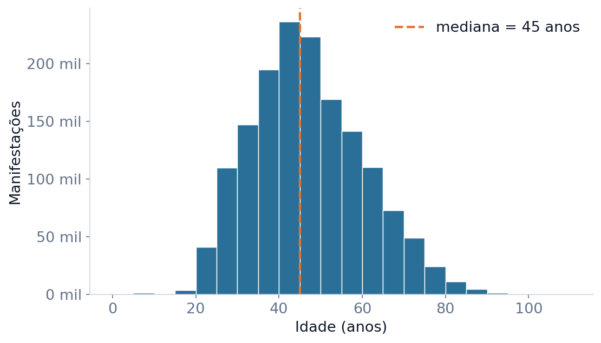
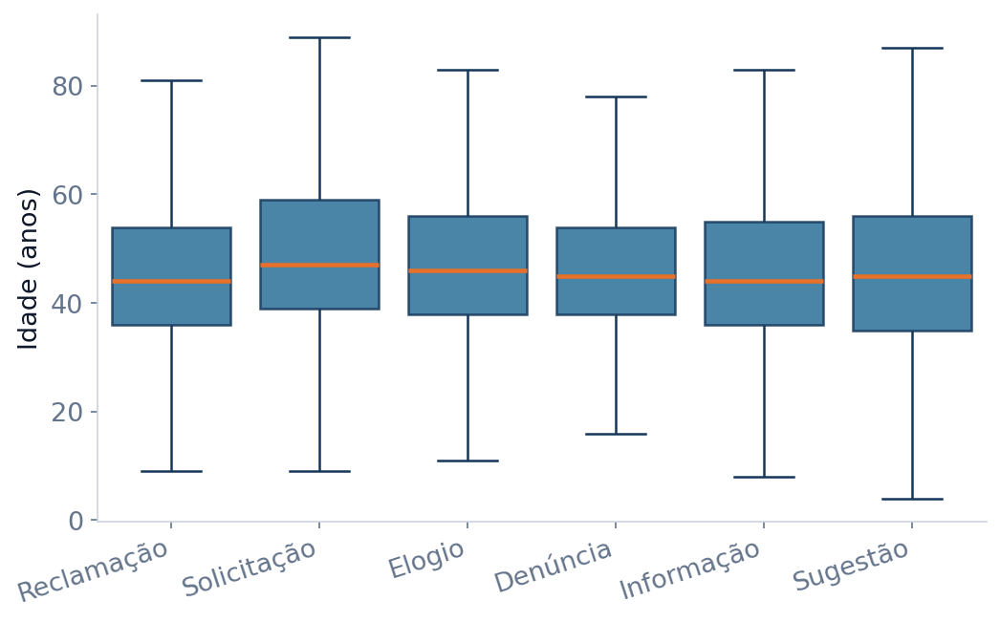
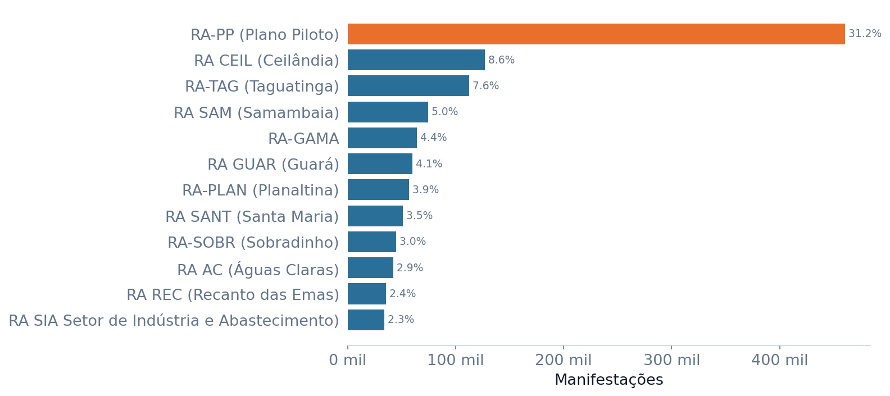
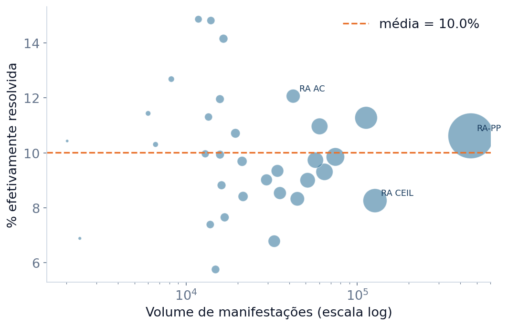

A pergunta
O que a população do DF mais demanda da Ouvidoria, quem se manifesta e qual é o desfecho?
Os dados
Um retrato de quase uma década de relação cidadão–governo
O Sistema de Ouvidoria (OUV-DF) registra reclamações, solicitações, denúncias, elogios e sugestões. Cada linha é uma manifestação real, com tema, situação, perfil do manifestante e região.
Fonte: Portal de Dados Abertos do GDF — “Dados Estatísticos do Sistema de Ouvidoria / OUV-DF”. Formato original ISO-8859-1, separador “;”. Ver no portal ↗
Tratamento
Completude e limpeza, com critério
Antes de analisar, enfrentamos os problemas reais do dado — e documentamos cada decisão.
Ausências em campos opcionais (26–31%)
Idade, sexo, bairro e região faltam em ~¼ a ⅓ dos registros. Mantivemos as linhas e filtramos por gráfico — excluí-las descartaria ~600 mil manifestações e enviesaria a análise.
Idades impossíveis (de −7967 a 266)
Valores fora de [1, 110] foram tratados como erro de digitação e convertidos em nulo, preservando o resto da linha.
Tipagem e padronização
A data vinha como texto no formato do SQL Server (“Oct 18 2016 6:00PM”) → convertida para data/hora (100% sem falha). 1 duplicata exata removida.
Decodificação dos códigos
Os campos *_id foram cruzados com as tabelas de domínio para virar rótulos legíveis (Tema, Classificação, Situação, Sexo, Região).
A análise
Oito leituras dos dados
Quatro gráficos interativos (passe o mouse) e quatro estáticos — cada um com sua interpretação.
Que tipo de manifestação o cidadão faz?
Distribuição por classificação.
A Ouvidoria é, antes de tudo, um canal de reclamação: ~67% de todas as manifestações. Elogios são apenas ~5%. O cidadão procura o canal para cobrar, não para parabenizar.
Sobre o que ele reclama?
Manifestações por tema.
As demandas se concentram em serviços essenciais e urbanos: Saúde, Transporte/Mobilidade, Zeladoria e Habitação somam ~65%. O sistema é movido pelo cotidiano — consulta médica, ônibus, buraco na via, iluminação.
O uso cresceu ao longo do tempo?
Manifestações por mês (2016–2025).
Adesão fortemente crescente desde 2016, com o canal saindo de poucos milhares para ~25–30 mil manifestações por mês e pico em março de 2022. As pontas (2016 e 2025) são anos parciais.
Responder é o mesmo que resolver?
Desfecho das manifestações.
O achado mais delicado: 76% ficam como “Respondida”, mas só ~9% como “Resolvida” — contra ~14% explicitamente “Não resolvida”. Responder não é resolver.
Quem se manifesta? (idade)
Distribuição etária dos manifestantes.

Público adulto de meia-idade: idade mediana de 45 anos, concentrada entre ~35 e ~56. Jovens e idosos participam pouco. (1,54 mi de idades válidas.)
A idade muda conforme o tipo?
Idade por classificação (boxplot).

O perfil etário é estável entre os tipos (medianas ~45 anos). Idade praticamente não diferencia o tipo de manifestação — todos reclamam, solicitam e denunciam de forma parecida.
De onde vêm as manifestações?
Top 12 regiões administrativas.

Forte concentração territorial: entre as manifestações que informam a região, o Plano Piloto sozinho responde por ~31% (≈21% do total), acima de regiões bem mais populosas. E ~31% sequer informam a RA.
Quem demanda mais é mais atendido?
Volume × resolução por região.

Não há relação positiva entre demandar muito e ser mais atendido: a resolução fica em 8–12% independentemente do volume da região. A baixa resolução é sistêmica, não de uma região específica.
O que aprendemos
Quatro conclusões
Um grande canal de reclamação
67% das manifestações são reclamações e só ~5% são elogios. A OUV-DF é um termômetro direto da insatisfação com o serviço público.
Demanda por serviços essenciais
Saúde, Transporte, Zeladoria e Habitação somam ~65% dos temas — consultas, passe estudantil, tapa-buraco e iluminação lideram.
Responder não é resolver
76% das manifestações são “respondidas”, mas só ~9% “resolvidas”. O gap entre atendimento e solução é sistêmico e não varia entre regiões.
Acesso desigual
O Plano Piloto concentra as manifestações; o público é adulto (mediana 45 anos) e mais feminino. Ampliar o alcance é um caminho de melhoria.
Limitações (honestidade da análise):
- 26–31% dos campos opcionais ausentes — tratados por filtragem, não por exclusão de linhas.
- “Respondida” depende de confirmação posterior do cidadão; parte do baixo índice de “resolvida” pode refletir não-confirmação.
- 2016 e 2025 são anos parciais. A análise é descritiva, não causal.